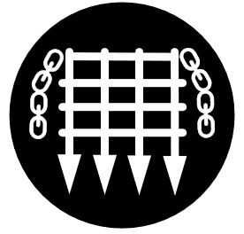
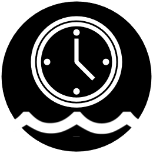

<!DOCTYPE html>
<html>
<head>
	
	<title>Below High Water - Dorset Dives</title>

	<meta charset="utf-8" />
	<meta name="viewport" content="width=device-width, initial-scale=1.0, maximum-scale=1.0, user-scalable=no" />
	<link rel="stylesheet" href="css/leaflet.css" />
    	<link rel="stylesheet" href="css/screen.css" />
	<link rel="stylesheet" href="css/MarkerCluster.css" />
	<link rel="stylesheet" href="css/MarkerCluster.Default.css" />
	<link rel="stylesheet" href="css/tabs.css" />
	<link rel="stylesheet" href="css/leaflet-search.min.css" />
	<link rel="stylesheet" href="css/leaflet-search.src.css" />
	<link rel="stylesheet" href="css/leaflet-search.mobile.src.css" />
	<link rel="stylesheet" href="css/leaflet-search.mobile.min.css" />
	<link rel="shortcut icon" type="image/x-icon" href="markers/SNORKEL.png" />
	<script src="js/leaflet.js"></script>
	<script src="js/leaflet.markercluster.js"></script>
	<script src="js/leaflet.markercluster-src.js"></script>
	<script src="js/leaflet-search.min.js"></script>
	<script src="js/leaflet-search.src.js"></script>
	<script type="text/javascript" src="data/diving.geojson"></script>
	
 
</head>
<style>
a {text-decoration: none;}

.infobx {
		width:250px;
		border-width: 1px;
		border-collapse:collapse;
		border-spacing:0;
		border-color: #00000000;
		border-style:solid;
		}
		
		
.title {
		border-width: 1px;
		font-family: 'Trebuchet MS', sans-serif;
		font-size:16pt;
		color: blue;
		font-weight:bold;
		overflow:hidden;
		padding:1px 1px;
		word-break:normal;
		text-align:left;
		vertical-align:bottom;
		}
		
.geoloc {
		border-width: 1px;
		border-color: black;
		font-family:Courier, sans-serif;
		font-size:14px;
		color: black;
		font-weight:bold;
		overflow:hidden;
		padding:2px 1px;
		word-break:normal;
		text-align:left;
		vertical-align:middle;
		}
.depth {
		font-family:'Trebuchet', sans-serif;
		font-size:14px;
		color: blue;
		font-weight:bold;
		overflow:hidden;
		padding:1px 1px;
		word-break:normal;
		text-align:right;
		vertical-align:middle;
		}
.story {	
		font-family:'Arial', sans-serif;
		font-size:14px;
		color: black;
		font-weight:normal;
		overflow:hidden;
		padding:10px 1px 10px 1px;
		word-break:normal;
		word-wrap: normal;
		text-align:left;
		vertical-align:middle;
		}
.bigger {	
		font-family:'Courier', sans-serif;
		font-size:26px;
		font-weight:bold;
		color: black;
		overflow:hidden;
		padding:7px 5px;
		word-break:normal;
		text-align:right;
		vertical-align:middle;
		//background-color: black;
		}
.diveicon {
		width: 30px;
		height: 30px;
		vertical-align: middle;
		text-align: right;
		display:inline-block;
		}
.icoBox {
		display:inline-block;
		word-wrap:nowrap;
		white-space:nowrap;
		vertical-align: middle;
		text-align: left;
		display:inline-block;
		}

.Mtitle {
		border-width: 1px;
		font-family: 'Trebuchet MS', sans-serif;
		font-size:14pt;
		color: blue;
		font-weight:bold;
		overflow:hidden;
		padding:1px 1px;
		word-break:normal;
		text-align:left;
		vertical-align:bottom;
		}
		
.Mgeoloc {
		border-width: 1px;
		border-color: black;
		font-family:Courier, sans-serif;
		font-size:12px;
		color: black;
		font-weight:bold;
		overflow:hidden;
		padding:2px 1px;
		word-break:normal;
		text-align:left;
		vertical-align:middle;
		}
.Mdepth {
		font-family:'Trebuchet', sans-serif;
		font-size:12px;
		color: blue;
		font-weight:bold;
		overflow:hidden;
		padding:1px 1px;
		word-break:normal;
		text-align:right;
		vertical-align:middle;
		}
.Mstory {	
		font-family:'Arial', sans-serif;
		font-size:12px;
		color: black;
		font-weight:normal;
		overflow:hidden;
		padding:10px 1px 10px 1px;
		word-break:normal;
		word-wrap: normal;
		text-align:left;
		vertical-align:middle;
		}
.Mbigger {	
		font-family:'Courier', sans-serif;
		font-size:20px;
		font-weight:bold;
		color: black;
		overflow:hidden;
		padding:3px 2px;
		word-break:normal;
		text-align:right;
		vertical-align:middle;
		//background-color: black;
		}
.Mdiveicon {
		width: 25px;
		height: 25px;
		vertical-align: middle;
		text-align: right;
		display:inline-block;
		}
.MicoBox {
		display:inline-block;
		word-wrap:nowrap;
		white-space:nowrap;
		vertical-align: middle;
		text-align: left;
		display:inline-block;
		}


</style>
<body>

<div id='map'></div>
<div id="box" style="z-index:5;"></div>
<script>

//Base Maps from Open Street Map

//sets screen start point
var SW = L.latLng(50.2, -3.5)
var NE = L.latLng(51.0, -1.0)
DorsetBounds = L.latLngBounds(NE,SW);

var map = L.map('map', {
	zoomControl: false,
	maxBounds: DorsetBounds,
 	maxBoundsViscosity: 0.5
})

	
map.fitBounds([DorsetBounds]);

	Land = L.tileLayer('https://{s}.tile.osm.org/{z}/{x}/{y}.png', {
		maxZoom: 15,
		minZoom: 9,
		attribution: 'Map data &copy; <a href="https://www.openstreetmap.org/copyright">OpenStreetMap</a> contributors, ' +
			     'Imagery © <a href="https://www.mapbox.com/">Mapbox</a>',
		id: 'mapbox/streets-v11',
	}).addTo(map);

//Google Satellite maps

	Satellite = L.tileLayer('http://mt0.google.com/vt/lyrs=s&hl=en&x={x}&y={y}&z={z}', {
		attribution: '&copy; <a href="https://about.google/brand-resource-center/products-and-services/geo-guidelines/#required-attribution">Google </a> contributors'
	}),

//DORIS seabed map for Dorset
	DORIS = L.tileLayer('https://doris.s3.amazonaws.com/newallbathy/{z}/{x}/{y}.png', {
		maxZoom: 15,
		minZoom: 9,
		attribution: '&copy; <a href="https://www.dorsetwildlifetrust.org.uk/doris">Dorset Wildlife Trust</a>'
			}),

	
//Marker template
	siteflag = L.Icon.extend({
		options: {
    		iconSize:     [34, 56],
		iconAnchor:   [17, 56],
		shadowUrl: 'markers/icon-shadow.png',
    		shadowSize:   [34, 56],
    		shadowAnchor: [7, 41],  
    		popupAnchor:  [0, -58]
		}
	});


//Dive Site Location
		var DiveSites = new L.geoJSON(flags, {
      		pointToLayer: (feature, latlng) => {
			var DepthMarker = feature.properties.MAXDEPTH;
			if (DepthMarker > 50) {DepthMarker = "50";
			} else if (DepthMarker > 40) {DepthMarker = "40";
			} else if (DepthMarker > 30) {DepthMarker = "30";
			} else if (DepthMarker > 18) {DepthMarker = "18";
			} else if (DepthMarker > 0) {DepthMarker = "0";	
			};
			var SiteMark = new siteflag({iconUrl:'markers/' + DepthMarker + '/' + feature.properties.TYPE + '.png'});
			return L.marker(latlng, {icon: SiteMark})
			},

		onEachFeature: function (feature, layer) {	
		Site = feature.properties.NAME;
		LatDM = feature.geometry.coordinates[1];
		LatD = Math.floor(Math.abs(LatDM))
		LatM= +((Math.abs(LatDM)-LatD)*60).toFixed(3)
		LatDM = LatD + '&deg' + LatM
		
		LonDM = feature.geometry.coordinates[0];
		LonD = Math.floor(Math.abs(LonDM))
		LonM= +((Math.abs(LonDM)-LonD)*60).toFixed(3)
		LonDM = '00'+ LonD + '&deg' + LonM
		
		

		Type = ''
		Shore = ''
		Snork = ''
		Protect = ''
		Tidal = ''
		Details = feature.properties.Description;
		Depth = feature.properties.MAXDEPTH;
		if (feature.properties.SHORE !== 'Y') {Shore = ""}
		if (feature.properties.SNORKEL !== 'Y') {Snork = ""}
		if (feature.properties.PROTECTED !== 'Y') {Protect = ""}
		if (feature.properties.TIDAL !== 'Y') {Tidal = ""}
		
		var Boxtable = '<a href="#img1" onclick="hideLegEnd()">' +
						'<table class="infobx">' +
						'<tr>' +
							'<td style="width:35px" class="story" rowspan=2>' + Type + 
							'<td class="title" colspan=3>' + Site + '</td>' +
						
						'</tr>'+
						'<tr>' +
							'<td class="geoloc" colspan=3>' + LatDM +'&#39N,&nbsp'+ LonDM + '&#39W' + '</td>' +
							'<td></td>' +
						'</tr>' +
						'<tr>' +
							'<td class="story" colspan=4>'+Details+'</td>'+
						'</tr>'+
						'<tr>'+
							'<td class="geoloc" colspan=3>'+Tidal+Shore+Snork+Protect+'</td>'+
							'<td class="depth" >Depth<span class="bigger">'+Depth+'m</span></td>' +
						'</tr>'+
						'</table>'+
						'</a>'
		if( /Android|webOS|iPhone|iPad|iPod|BlackBerry|IEMobile|Opera Mini/i.test(navigator.userAgent) ) {
		Type = ''
		Shore = ''
		Snork = ''
		Protect = ''
		Tidal = ''
		if (feature.properties.SHORE !== 'Y') {Shore = ""}
		if (feature.properties.SNORKEL !== 'Y') {Snork = ""}
		if (feature.properties.PROTECTED !== 'Y') {Protect = ""}
		if (feature.properties.TIDAL !== 'Y') {Tidal = ""}
		var Boxtable
		= '<a href="#img1" onclick="hideLegEnd()">' +
						'<table class="infobx">' +
						'<tr>' +
							'<td style="width:35px" class="Mstory" rowspan=2>' + Type + 
							'<td class="Mtitle" colspan=2>' + Site + '</td>' +
						
						'</tr>'+
						'<tr>' +
							'<td class="Mgeoloc" colspan=3>' + LatDM +'&#39N,&nbsp'+ LonDM + '&#39W' + '</td>' +
							'<td></td>' +
						'</tr>' +
						'<tr>' +
							'<td class="Mstory" colspan=4>'+Details+'</td>'+
						'</tr>'+
						'<tr>'+
							'<td class="Mgeoloc" colspan=3>'+Tidal+Shore+Snork+Protect+'</td>'+
							'<td class="Mdepth" >Depth<span class="Mbigger">'+Depth+'m</span></td>' +
						'</tr>'+
						'</table>'+
						'</a>'
		}
		
		layer.bindPopup(Boxtable)
		}
    		})

//Clusters dive site markers for clarity

var Clusters = L.markerClusterGroup({maxClusterRadius:50, disableClusteringAtZoom:15, spiderfyOnMaxZoom: true});

Clusters.addLayer(DiveSites).addTo(map);

//defines lightbox content for site pictures
map.on('popupopen', function(e) {
		MarkName = e.popup._source.feature.properties.NAME
		MarkName = MarkName.split(" ").join("%20");
		document.getElementById("box").innerHTML = '<a href="#" class="lightbox" id="img1" onclick="ShowLegend()"><span style="background-image: url(data/pics/'+MarkName+'.jpg);"></span></a>'
		})


//map.setView([50.6,-2.1],9.5);

var baseMaps = {
    	"Street": Land,
	"Satellite": Satellite
	};

var overlayMaps = {
	"DORIS": DORIS
	};

L.control.layers(baseMaps, overlayMaps).addTo(map);

	var iconlegend = L.control({position: 'topleft'});
	iconlegend.onAdd = function (map) {
	var div = L.DomUtil.create('div', 'legend');
	div.innerHTML +=  '<div style="background-color:white; padding:5px; border-radius: 7%">' +
	'<style> img {width:30px; height: 30px; padding: 2px; vertical-align:middle; horizontal-align:middle; } </style>'+
	'<a href="#keybox" onclick=LegendBox()><center> Legend </center>'
	
	return div;
	};

	function LegendBox() {
	hideLegEnd();
	document.getElementById("box").innerHTML = 
	'<a href="#" class="lightbox" id="keybox" onclick="ShowLegend()">' +
	'<table style="width: 50%; margin-left:auto; margin-right:auto;">' +
	'<tr height="10%"><td colspan="4" style="text-align: center;"><p4> Dive Types </p4></td></tr>' +
	'<tr height="10%"><td></td><td><p3>Wreck</td><td></td><td><p3>Shore Dive<td></tr>' +
	'<tr height="10%"><td></td><td><p3>Reef</td><td></td><td><p3>Skin Dive<td></tr>' +
	'<tr height="10%"><td></td><td><p3>Drift</td><td></td><td><p3>Protected Site<td></tr>' +
	'<tr height="10%"><td></td><td><p3>Structure<td></tr>' +

	'<table style="width: 50%; margin-left:auto; margin-right:auto;">' +
	'<tr height="10%"><td colspan="8" style="text-align: center;"><p4> Dive Depths </p4></td></tr>' +
	'<tr height="20%"><td></td><td><p3>0 - 18m</td><td></td><td><p3>18-30m<td></td><td></td><td><p3>30-40m<td></tr>' +
	'<tr height="20%"><td></td><td><p3>40 - 50m</td><td></td><td><p3>50m +</td></tr>'
	}
//
	iconlegend.addTo(map);

	function hideLegEnd() {
  		map.removeControl(iconlegend);
		//map.removeControl(depthlegend)
		}
	function ShowLegend() {
		iconlegend.addTo(map);
		//depthlegend.addTo(map);
		}

	var searchControl = new L.Control.Search({
		layer: Clusters,
		propertyName: 'NAME',
		//marker: false,
		moveToLocation: function(latlng, title, map) {
			map.setView(latlng, 15); // access the zoom
		}
	});
		

	map.addControl(searchControl);

	window.addEventListener("orientationchange", function() {
  	location.reload()
	console.log("Switched")
	}, false);


//function onLocationFound(e) {
	//	var radius = e.accuracy / 2;

	//	L.marker(e.latlng).addTo(map)
	//		.bindPopup("You are within " + radius + " meters from this point").openPopup();

	//	L.circle(e.latlng, radius).addTo(map);
	//}

	//function onLocationError(e) {
	//	alert(e.message);
	//}

	//map.on('locationfound', onLocationFound);
	//map.on('locationerror', onLocationError);

	//map.locate({setView: true, maxZoom: 16});

</script>
</body>
</html>


	